【考研黑书向】Part One 程序结构和执行之程序的机器级表示 Machine-Level Programming¶
IA-32指令系统¶
指令系统概述¶
计算机硬件的基本组成¶

- 工作方式：存储程序
- 数据和指令实现存放在存储器中，形式上没有差别
- 每条指令和每个数据都有地址。指令按序存放，指令由OP、ADDR字段组成
- 指令中需给出的信息：
- 操作性质(操作码)
- 源操作数1 或/和 源操作数2(立即数、寄存器编号、存储地址)
- 目的操作数地址(寄存器编号、存储地址)
- 存储地址的描述与操作数的数据结构有关
- 指令中需给出的信息：
- 程序由指令组成，程序启动后，计算机自动取出指令执行，程序起始地址在PC中
- 指令执行过程中，指令和数据被从存储器取到CPU，存放在CPU内的寄存器中，指令在IR(指令寄存器)中，数据在GPR(通用寄存器)中
计算机中数据存储¶
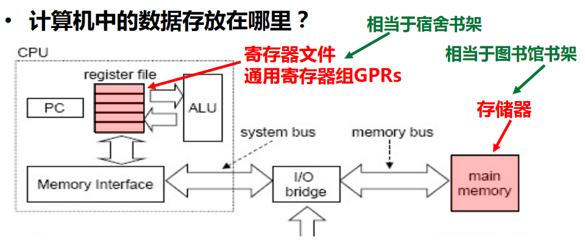
指令¶
| 名称 | 描述 | 类比 |
|---|---|---|
| 机器指令 | 处于硬件和软件的交界面 | 一个菜谱指定的一个完整做菜过程 |
| 微指令 | 微程序级命令，属于硬件范畴 | 洗、切、煮、炒等做菜“微过程” |
| 伪指令 | 由若干机器指令组成的指令序列，属于软件范畴 | 由多个菜谱合成一个”大菜“的过程 |
| 汇编指令 | 机器指令的汇编表示形式，即符号表示 |
- 机器指令和汇编指令一一对应，它们都与具体机器结构有关，都属于机器级指令
指令集体系结构ISA：Instruction Set Architecture¶
- ISA是一种规约（Specification），它规定了如何使用硬件
- 可执行的指令的集合，包括指令格式、操作种类以及每种操作对应的操作数的相应规定；
- 指令可以接受的操作数的类型；
- 操作数所能存放的寄存器组的结构，包括每个寄存器的名称、编号、长度和用途；
- 操作数所能存放的存储空间的大小和编址方式；
- 操作数在存储空间存放时按照大端还是小端方式存放；
- 指令获取操作数的方式，即寻址方式；
- 指令执行过程的控制方式，包括程序计数器、条件码定义等。
- ISA在计算机系统中是必不可少的一个抽象层，没有它则软件无法使用计算机硬件，一台计算机不能称为“通用计算机”
- ISA和计算机组成（微结构）之间的关系
- 不同ISA规定的指令集不同，如，IA-32、MIPS、ARM等
- 计算机组成必须能够实现ISA规定的功能，如提供GPR、标志、运算电路等
- 同一种ISA可以有不同的计算机组成，如乘法指令可用ALU或乘法器实现
IA-32¶
-
体系结构
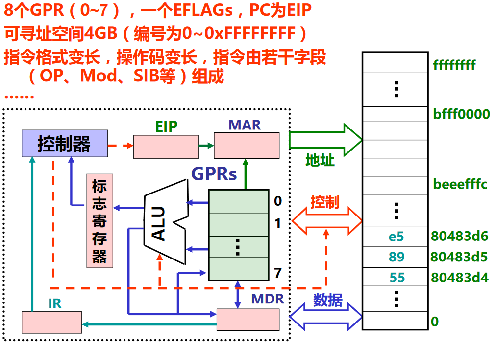
-
支持的数据类型及格式
- b：8位，byte
- w：16位，word
- l：32位，double word
- long double实际长度为80位，但分配96位=12B（按4B对齐）
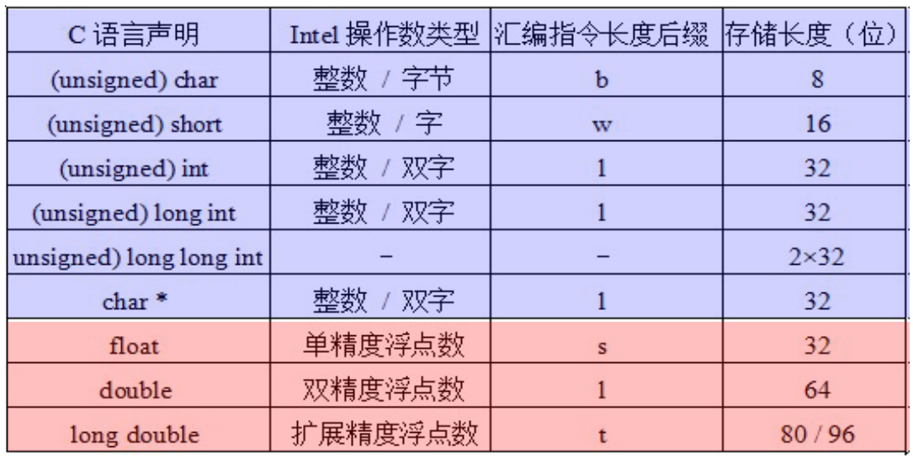
-
IA-32寄存器组织
- 寄存器扩展的方式
- 首先有8个8位的寄存器：AL、BL...、DH
- 然后有8个16位的寄存器：AX、BX...、DI
-
然后扩展到32位机器的时候，有了8个32位的寄存器，前面的E代表32位：EAX、EBX...、EDI

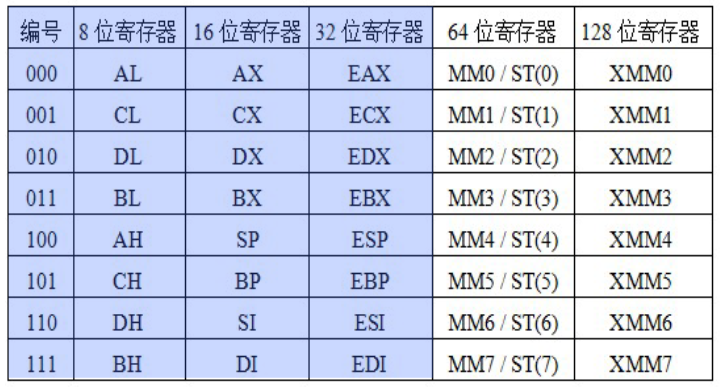
-
反映了体系结构发展的轨迹，字长不断扩充，指令保持兼容
- ST(0)~ST(7)是80位，MM0~MM7使用其低64位
-
IA-32的标志寄存器 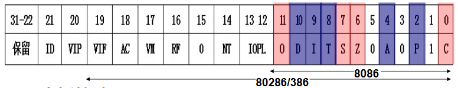
- 6个条件标志
- OF、SF、ZF、CF各是什么标志（条件码）
- AF：辅助进位标志（BCD码运算时才有意义）
- PF：奇偶标志
- 3个控制标志
- DF（Direction Flag）：方向标志（自动变址方向是增还是减）
- IF（Interrupt Flag）：中断允许标志 （仅对外部可屏蔽中断有用）
- TF（Trap Flag）：陷阱标志（是否是单步跟踪状态）
- 6个条件标志
-
IA-32的寻址方式(如何根据指令所定信息得到操作数或操作数地址)
-
操作数所在的位置
- 指令中：立即寻址
- 寄存器中：寄存器寻址
- 存储单元中（属于存储器操作数，按字节编址）：其他寻址方式
-
存储器操作数的寻址方式与微处理器的工作模式有关
-
实地址模式（基本用不到）
- 为与8086/8088兼容而设，加电或复位时
- 寻址空间为1MB，20位地址：(CS)<<4+(IP)
-
保护模式（需要掌握）
- 加电后进入，采用虚拟存储管理，多任务情况下隔离、保护
- 80286以上微处理器的工作模式
- 寻址空间为2^{32}B，32位线性地址分段（段基址+段内偏移量）

-
-
-
IA-32机器指令格式

IA-32指令类型¶
传送指令¶
- 通用数据传送指令
-
地址传送指令
- lea：加载有效地址load effective address
- 如
leal (%edx,%eax),%eax的功能为R[eax]⬅R[edx]+R[eax]，意思是把寄存器的内容取出来，把进行加法运算后的和，作为数据装入到eax中，执行前若R[edx]=i，R[eax]=j，则指令执行后R[eax]=i+j，此处的R表示寄存器register- (%edx,%eax)，edx的内容，相当于是基址值，加上eax的内容，相当于是变址值，基址+变址，两个寄存器的内容加起来是有效地址
-
输入输出指令
- 标志传送指令
【例一】“入栈”(pushw %ax)的解释过程

- 将通用寄存器的内容送到栈顶位置所指的数据
- w是16位，ax是16位寄存器
- 按4B对齐，所以一个横格为32位，即2个ax
- 小端方式，所以AL在栈顶，LSB在低地址
- 栈由高地址向低地址增长
-
过程为：
1 2 3 4 5 6 7 8
# 取栈顶指针sp寄存器中的值 # 将栈顶指针向下移一个ax的距离(2个字节)，即-2 # 让sp指向新的栈顶 R[sp]⬅R[sp]-2 # 把ax中的值压栈，意思是将ax的值 = 以栈顶指针sp的值为内存地址的那块单元的所存的值 # 即在新的栈顶处把ax的内容放入 # M表示内存 memory M[R[sp]]⬅R[ax]
【例二】“出栈”(popw %ax)
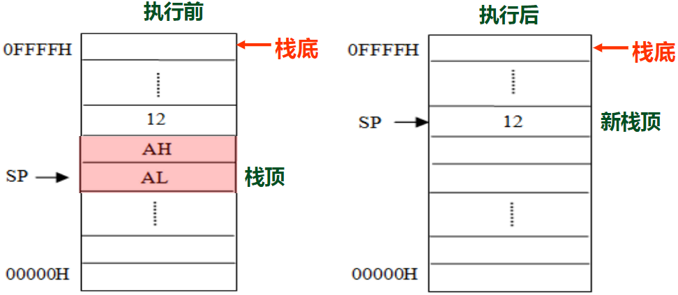
- 将栈顶位置所指的数据送到通用寄存器
-
过程为：
1 2 3 4
# 原栈顶处指向的两个字节送入ax R[ax]⬅M[R[sp]] # 让sp指向新的栈顶 R[sp]⬅R[sp]+2
【例三】传送指令举例
将以下Intel格式指令转换为AT&T格式指令，并说明功能。
1 2 3 4 5 6 7 | |
push==l== %ebp R[esp]⬅R[esp]-4;M[R[esp]]⬅R[ebp]
mov==l== %esp,%ebp R[ebp]⬅R[esp]
movl 8(%ebp),%edx R[edx]⬅M[R[ebp]+8]
movb $255,%bl R[bl]⬅255
movw 8(%ebp,%edx,4),%ax R[ax]⬅M[R[ebp]+R[edx]*4+8]
movw %dx,20(%ebp) M[R[ebp]+20]⬅R[dx]
lea==l== 8(%ecx,%edx,4),%eax R[eax]⬅R[ecx]+R[edx]*4+8
- 如何判断第1，2，7句是l，因为题目中都是e，所以是双字
- 总结规律：
- mov指令需要在算出有效地址后加上M，而lea直接是有效地址
- push的第二条相当于mov指令1
【例四】add函数
1 2 3 4 5 | |
 表示传送指令；加粗表示操作数；横线表示用RTL描述的传送指令的功能
表示传送指令；加粗表示操作数；横线表示用RTL描述的传送指令的功能
80483d4<add>:
80483d4: 55 push %ebp
80483d5: 89 e5 mov %esp, %ebp
80483d7: 83 ec 10 sub $0x10, %esp
80483da: 8b 45 0c mov 0xc(%ebp), %eax
80483dd: 8b 55 08 mov 0x8(%ebp), %edx
80483e0: 8d 04 02 lea (%edx,%eax,1), %eax
80483e3: 89 45 fc mov %eax, -0x4(%ebp)
80483e6: 8b 45 fc mov -0x4(%ebp), %eax
80483e9: c9 leave
80483ea: c3 ret
程序的执行过程
- 周而复始：根据EIP取指令；指令译码；取操作数；指令执行；回写结果；修改EIP的值
- add函数从80483d4开始，EIP⬅0x80483d4

-
取指令
- 取指令的过程是把指令地址送到地址线和存储器的过程
- EIP中最初存的是函数开始地址80483d4，将该值传输给MAR(存储地址寄存器，MAR为下一次的读写数据指定位置)，再送到地址线上
- 此时控制器发出Rd读命令，送到控制线上，告诉存储器要读地址线上所给的单元的内容
- 存储器接收到读命令和地址后，开始进行读操作，选中该地址，读出4个字节5589e583，把地址上的内容传输到数据线上
- 数据传输到MDR(存储数据寄存器，MDR存储从内存交换的数据)，然后传给指令寄存器IR
-
指令译码
- 指令寄存器中的高位，即op字段，会送到控制器，在控制器中进行译码
- 55译码后，计算机知道该指令的功能，即为
R[esp]⬅R[esp]-4;M[R[esp]]⬅R[ebp] - 译码的结果产生了很多控制信号，控制信号控制机器实现功能
-
指令执行
-
R[esp]⬅R[esp]-4：ESP的初始内容是bfff0000，将ESP-4后的内容变为beeefffc(ESP的最初内容实际上是被送入ALU中，在ALU中实现-4，结果再送回ESP中)
-
M[R[esp]]⬅R[ebp]：根据esp的内容去存储器访问，将ebp的内容写入对应位置-
将地址先送入MAR，然后再送入地址线，同时控制器发出Wr写信号放到控制线上，并且要把写的数据即EBP的内容放到MDR中，然后送到数据线上
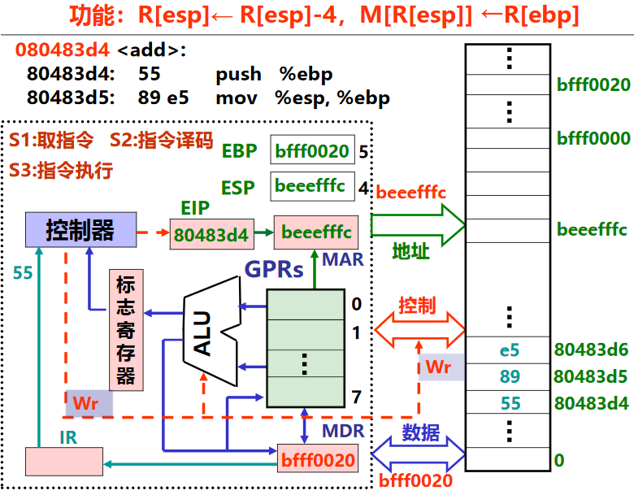
-
存储器最终接收到的消息是：接受写的控制信号，把数据线上的
bfff0020值写入地址beeefffc处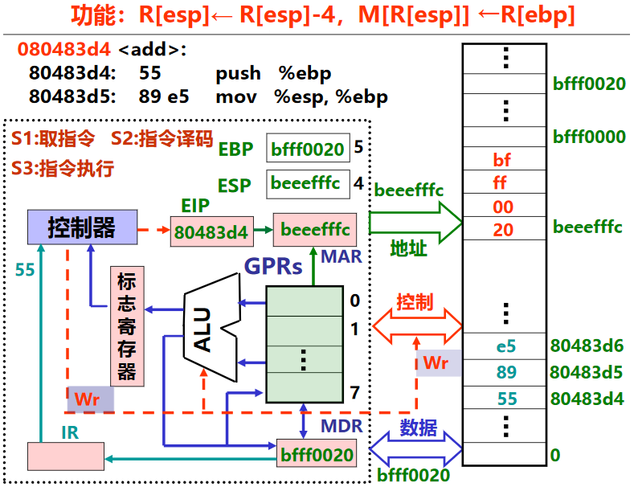
-
-
至此push指令执行完，对EIP(IA32中的PC：程序计数器)增量，即在EIP中加上指令的长度，由于push指令(55)只有一个字节，所以EIP由
80483d4变化为80483d5，即下一条指令的地址，开始执行下一条指令 - 传送指令如果是在寄存器和寄存器之间的传送，则只需要在寄存器之间传输；如果涉及到访问内存，则需要总线进行传输
-
C语言语句的机器级表示¶
可执行文件的存储器映像
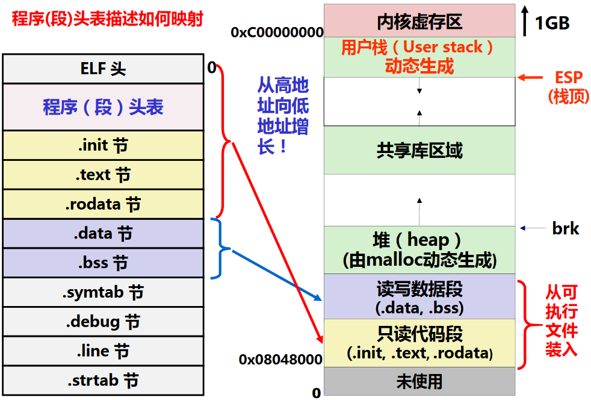
过程(函数)调用的机器级表示¶
过程调用的执行步骤
P为调用者，Q为被调用者
P的过程：
- P将入口参数(实参)放到Q能访问到的地方
- CALL指令：P保存返回地址，然后将控制转移到Q
Q的过程：
- 准备阶段：Q保存P的现场，并为自己的非静态局部变量分配空间
- 处理阶段：执行Q的过程体(函数体)
- 结束阶段：Q恢复P的现场，释放局部变量空间
- 结束阶段RET指令：Q取出返回地址，将控制转移到P
现场：通用寄存器的内容。因为所有过程共享一套通用寄存器 - 调用者保存寄存器：EAX、EDX、ECX。即当过程P调用过程Q时，Q可以直接使用这三个寄存器，不用将他们的值保存到栈中。如果P在从Q返回后还要用这三个寄存器，则P应在转到Q之前先保存，并在从Q返回后先恢复它们的值再使用。为了减少准备和结束阶段的开销，应先使用这三个寄存器 - 被调用者保存寄存器：EBX、ESI、EDI。即Q必须先将它们的值保存到栈中再使用它们，并在返回P之前恢复它们的值 - EBP和ESP分别是帧指针寄存器和栈指针寄存器，分别用来指向当前栈帧的底部和顶部
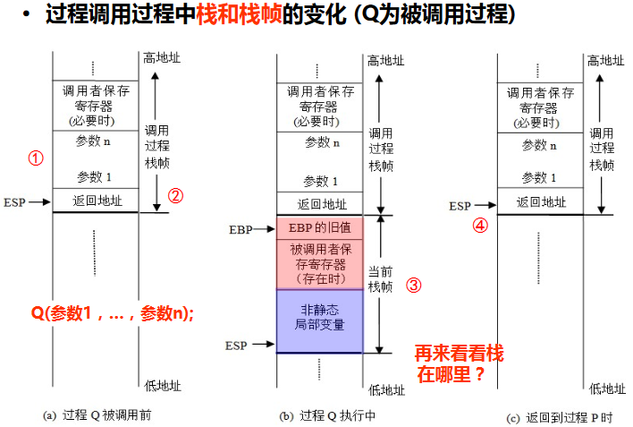
【例子】
1 2 3 4 5 6 7 8 9 | |
pushl %ebp
准备阶段
movl %esp,%ebp
subl $24,%esp
movl $125,-12(%ebp)
分配局部变量
movl $80,-8(%ebp)
movl -8(%ebp),%eax
准备入口参数
movl %eax,4(%esp)
movl -12(%ebp),%eax
movl %eax,(%esp)
call add
movl %eax,-4(%ebp)
准备返回参数
movl -4(%ebp),%eax
leave
结束阶段
movl %ebp,%esp; popl %ebpret
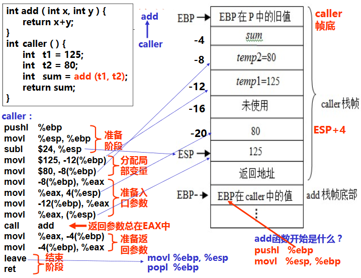
详细解析:
- 在调用者caller的准备阶段，将原有的栈底ebp(即调用caller的函数的栈帧栈底)的值入栈；然后将现在的栈顶esp给ebp，即ebp成为新的栈帧的栈底；esp-24，即栈顶指针往低地址移动24个字节，定位到新的栈顶，至此caller的栈帧形成
int t1=125;int t2=80对应movl $125,-12(%ebp);movl $80,-8(%ebp)是在分配局部变量。将ebp-12位置处的内容置为125，即t1的位置；将ebp-8位置处的内容置为80，即t2的位置。为什么要反着存- 因为add函数需要两个参数，所以要在调用add前，将add所需要的参数放在add能够访问的位置。参数压栈的顺序是从右往左，所以第一步是将t2压栈，
movl -8(%ebp),%eax，即把ebp-8处即t2处的值赋给eax，然后movl %eax,4(%esp)是将eax的值赋给esp+4(esp往高地址)所在位置的值；第二步将t1压栈，movl -12(%ebp),%eax，即把ebp-12处即t1处的值赋给eax，然后movl %eax,(%esp)是将eax的值赋给esp所在位置的值 - call add即caller先保存返回地址，即call add下一条指令的地址，然后再调用add函数，将控制权移交给add
- add函数开始时，先要
pushl %ebp;movl %esp,%ebp，即保存caller栈帧的指向栈底的ebp指针的值，然后将现在的esp的值赋给ebp，ebp即为新栈帧的栈底，即add函数的栈底 - add函数执行结束，返回caller函数。add函数的返回参数总储存在eax中
- caller函数要获得add函数返回的结果，需要将eax中存的值赋值给ebp-4，即图中的sum
- 由于caller函数也需要将sum结果返回给上一个调用它的函数，所以caller函数中把sum的值传给了eax寄存器
- caller函数执行leave指令，即把ebp的值给esp，即退栈，esp往高地址移动，caller的栈帧“消失”，esp是作为调用caller的函数的栈帧栈顶；然后再把栈顶的原来压栈的调用caller的函数的EBP值出栈，EBP为调用caller的函数的栈帧的栈底，调用caller函数的栈帧恢复
- ret表示caller函数调用结束，回归到调用caller函数继续执行
总结：一个C过程的大致结构如下：
-
准备阶段
- 形成帧底：push指令 和 mov指令
- 生成栈帧（如果需要的话）：sub指令 或 and指令
- 保存现场（如果有被调用者保存寄存器） ：mov指令
-
过程(函数)体
- 分配局部变量空间，并赋值
-
具体处理逻辑，如果遇到函数调用时
- 准备参数：将实参送栈帧入口参数处
- CALL指令：保存返回地址并转被调用函数
-
在EAX中准备返回参数
-
结束阶段
- 退栈：leave指令 或 pop指令
- 取返回地址返回：ret指令
入口参数的位置

按地址传递参数和按值传递参数
1 2 3 4 5 6 7 8 9 10 11 12 13 14 15 16 17 18 19 20 21 22 23 24 25 26 27 28 29 | |
按地址传递参数

按值传递参数

递归过程 - 好难理解哇呜呜呜


【例二】